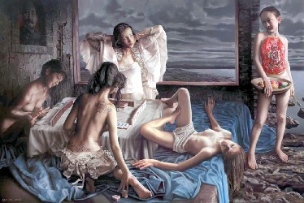

“ HEVEN ”というニュースサイトにあった記事と写真。といっても、upされたのは 約２年前（2010年11月3日）らしいけれど。
http://www.hvn4u.com/archives/5303
クリックで写真拡大
ニュースサイトにあった「五個裸女 打麻雀」は、「５人の裸女が麻雀をしている」という意味だが、これは絵の内容を表しただけ。作者による本来の題名は「2008 Beijing（北京）」。
そして これは単に５人の裸女性が麻雀をしているという絵ではないそうだ。
ページに記載された解説によると、いま台湾情勢がどうなるかという局面に入ったところ。フルーツの入った籠を手に、赤い肚兜（はらかぶと＝中国女性の伝統的な下着）を着けた少女が台湾を表している。しかし少女（当事者の台湾）は卓につくことができない。左手にフルーツナイフを持っているが、この状況で振り回すことはできない。勝負が決まるまで、おとなしくフルーツを運び続けるだけ。
プレーヤーは、こっち向きの女性がアメリカ、背中を見せているのが中国、右側で寝そべっているのがロシア、左側の熱心に手牌を見ているのが日本。女性が着ている服は、それぞれの強さをあらわしているとか。一番 ちゃんとした服装のアメリカは強い立場。台湾を狙っているが、最終的には自分が勝つと思っているので、目先の状況には それほど気が入らない。
ロシアは片足をアメリカに乗せ、左手は中国に伸ばして こっそりと牌のスリカエの手助けをしようとしている。しかし自分は少牌している。つまりロシアは台湾情勢に興味がない。台湾情勢を利用してアメリカに同調し、裏で中国に武器を売って儲けたいだけ。
中国は上半身は裸であるが下半身は見えない（実力がはっきりしない）。手牌に「東」があるのは東風D31（長距離ミサイル）をあらわしている。また背後に牌を二つ隠し、いざとなれば.... いや 局面の変化に自在に対応しようとしている。右肩に鳳凰のタトゥーをしている。これは中国の伝統文化はすでに外見だけに過ぎず、本質は欧米と同じ。かえって肚兜をつけた台湾の方が中華の文化をひき継いでいることを示している。
左側の女性が日本。服を着ていないのは、４人のなかで一番 弱いことを表している。そのうえ自分の手を見ることだけに気がいって、他のメンバーの小細工、あるいは異なる目線で勝負をしていることに気づいていない。これは目先の利益や状況だけにとらわれ、グローバルな視点がないことをあらわしている。表情から、日本の配牌がいちばん良いことがわかる。しかし勝負を制するのは、配牌よりも他の要素の方が大きいことに
まったく気づいていない。そして窓外に暗雲が垂れ込めているのは、今後の展開を暗示しているのだそうな。いやはや、なんとも....
|